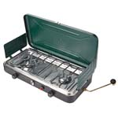

Equipment List
Being prepared when going Boondock camping is a must. Because boondock camping takes you off the grid, you must bring all the things you don’t normally think about when you leave on a trip, one example is toilet paper. If you don’t bring it, you’ll have to do without it and that can be a problem in those messy moments. Before you go on a Boondocking camping trip it is important to think through every item that you use each day and determine if you will need it. Below is a list of the basic items needed when you go Boondock camping, followed by more specific items you'll need for those of you who want to bring a few more comforts when camping off the grid.
Tent Camping Equipment List
Shelter and Sleeping Needs
- Tent with rain fly
- Sleeping bag
- Pillow
- Fleece sleeping bag liner
- Blankets
- Sleeping mat, cot, or air-matress
- Camp chairs
- Spare batteries & Chargers
- Flashlight, headlamp, or lantern
- Canopy tent
- Tarp & rope
- Gas Firepit & Propane
Food Preparation and Eating
- Stove or Grill
- Fuel, (gas, propane, etc.)
- Matches and lighter
- Ice cooler
- Pots, pans, and tea kettle
- Chopping board
- Plates, bowls, and mugs
- Cooking and eating utensils
- Dish cloths, and dish towels
- Wash basin and dish soap
- Trash bags
- Food
- Portable water jugs (lots!)
Clothing
- Normal everyday clothing, but keep in mind that lightweight and quick drying materials like nylon will help you stay warmer, drier, and more comfortable in the cold. Cotton and denim take a long time to dray after getting wet.
- Rain jacket or poncho
- Clean and dry clothing to sleep in.
- Proper shoes that will keep you warm, dry, and protected.
- Wool hat, gloves, coat, multiple layers for warmth.
- Spare underwear and socks.
- Sun hat, sun block, after sun, and sunglasses.
Toiletries
- Your personal toiletries
- Toothbrush
- Toothpaste
- Medications
- First aid kit
- Hand sanitizer and hand soap
- Toothbrush and toothpaste
- Towels
- Insect repellent
- Toilet Paper
RV Camping Equipment List
The equipment list for RV camping is the same as for tent camping, except for the tent and the sleeping pad, cot, or air mattress. These sleeping comforts are usually provided by the RV, but all other camping gear listed is applicable, it's just stored in the RV. When you go RV camping, most of your time will be spent out doors. Make sure to pack those things that will make out-door living the most enjoyable for you.
15 Items Recommended For Boondock Camping
Folding Table & Benches
Great for meal prep and eating.

Portable Gas Firepit
Safe, easy, and convenient.

Small Generator
Helpful for any electrical needs.

Portable Water Jug
The easiest way to pack water.

Tent Canapy
A great way to provide shade on a hot, sunny day.

Propain Tank
Great for the gas firepit and the camp stove.
RV Battery
Great to help supply the RV with all the power it needs.

Propane Camp Stove
A conveniet way to cook your food while camping.
Solar Lights
A great way to light up the camping area at night.

Camping Toilet
The easiest way to make a toilet in the wild.

Solar Lantern
A convenient sorce of portable light.
Toilet Tent
Privacy for the portable toilet.
Solar Shower
A great way to bathe while camping.
Hammock
The best way to relax while camping.

Water Bottle
Keeps your beverage hot or cold.